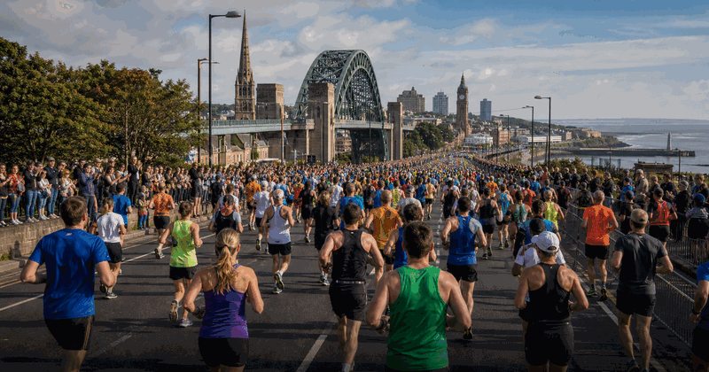
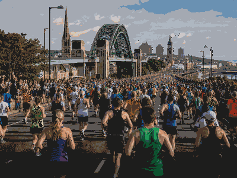

running event view
Great North Run
Great North Run keeps the evergreen overview and current edition details together in this framed event view.
FrequencyRecurring
Current edition2026
Main cityNewcastle upon Tyne
FormatRunning event view
History viewEdition details in one place
Use the year switcher for recent editions. Date, venue, ticket and programme updates stay inside the same event URL.

More RunningInterested in more running?Explore related events, places and calendar moments.